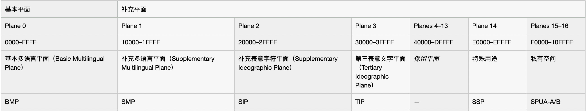
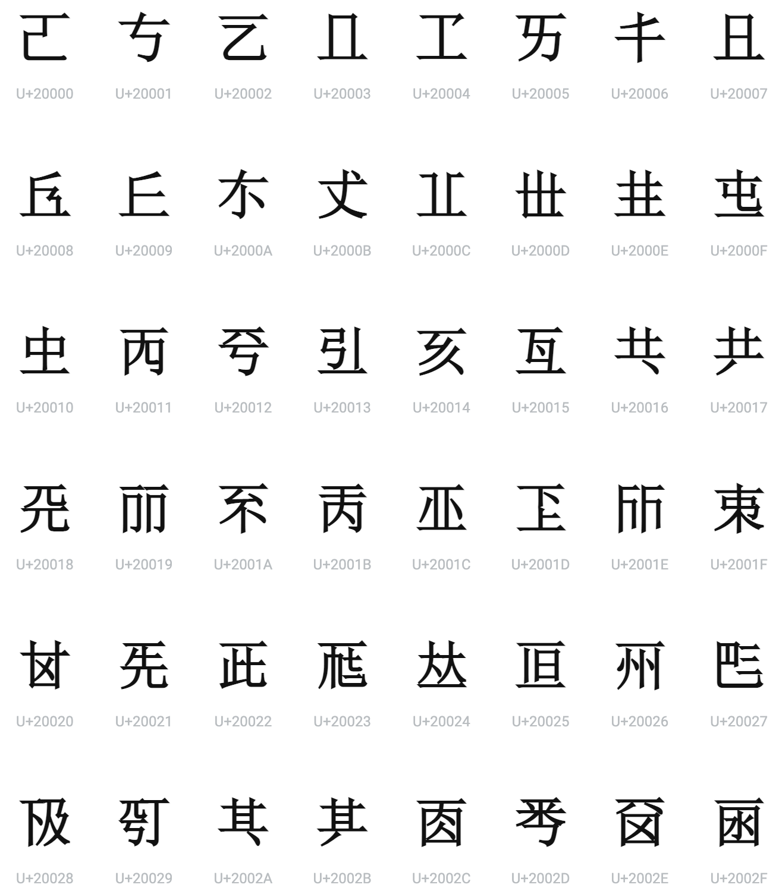
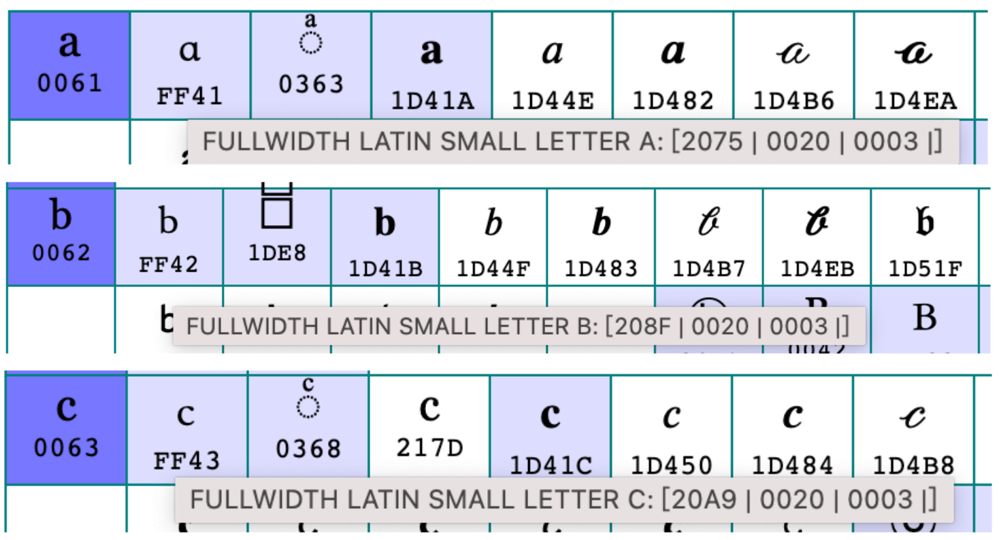
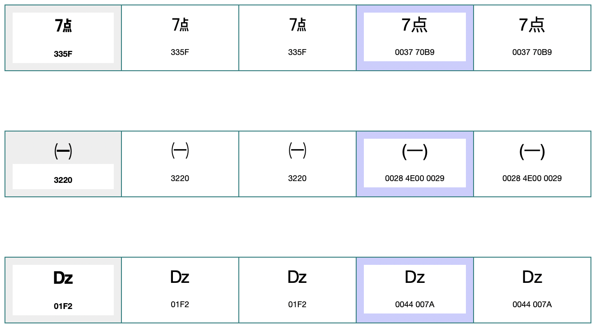
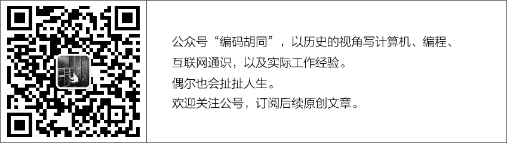

Character Encoding (Part 3): Unicode
In the first two entries of this series, we explored the digital Babel of legacy encodings and analyzed the four-layer character encoding model. Now we arrive at the pivotal turning point in text technology: Unicode, the universal standard that finally brought order to the global data chaos.
The Origins of Unicode
The journey began in 1987 when two engineers—Joe Becker from Apple and Lee Collins from Xerox—set out to investigate a truly universal character set. Their mission was ambitious: to design a single character set capable of representing every character in every writing system on Earth.
At the time, this goal was widely considered impossible. How could you fit tens of thousands of Chinese ideographs, thousands of Korean Hangul syllables, and hundreds of alphabetic scripts into a single codespace? The industry consensus held that separate, localized standards for each writing system were the only practical approach.
Becker and Collins made several key architectural insights that shifted the paradigm:
- Two Bytes Are Sufficient: Their analysis revealed that a 16-bit space (yielding 65,536 unique values) could comfortably accommodate all modern writing systems in active use, with ample room to spare. This was a massive revelation: a global character set did not require the memory overhead of 32-bit code points.
- Fixed-Width Simplifies Processing: Variable-width, stateful encodings (common in legacy CJK systems) are notoriously complex to parse. String searching, sorting, and index offsets are significantly more performant when every character occupies a uniform bit-width. A 16-bit codespace made a clean, fixed-width model highly viable.
- CJK Han Unification: While Chinese, Japanese, and Korean are separate languages, they share a common root in Chinese ideographs (Hanzi, Kanji, and Hanja). Many of these characters are identical or structurally equivalent. By unifying these characters—assigning a single code point to a Han character regardless of national origin—the team dramatically reduced the total size of the required codespace.
Armed with these core principles, Becker published the Unicode 88 draft proposal in 1988, outlining a clean, 16-bit fixed-width standard for all modern text.
In 1991, the Unicode Consortium was incorporated, and Unicode 1.0 made its debut. This initial specification contained 7,161 characters across 24 scripts. While it was a major milestone, it remained incomplete, as CJK unification had not yet been finalized.
The watershed moment occurred in 1992 with the release of Unicode 1.0.1, which officially incorporated the CJK Unified Ideographs block, adding more than 20,000 characters. For the first time, a single standard could seamlessly represent Chinese, Japanese, and Korean text in the same file. The universal character set was no longer a theoretical dream; it was a production reality.
UCS: The Parallel Effort at ISO
While the Unicode Consortium was drafting its standards, the International Organization for Standardization (ISO) was developing its own competing global character set: the Universal Coded Character Set (UCS), codified under the ISO/IEC 10646 standard.
UCS and Unicode shared nearly identical objectives, and both mapped characters to similar code spaces. However, because they were developed in isolation by separate committees, minor discrepancies in formatting and scope threatened to create another split in the industry.
Recognizing the absolute disaster of maintaining two competing "universal" standards, the Unicode Consortium and ISO negotiated a historic merger between 1991 and 1993. Since then, the two bodies have kept their code assignments perfectly synchronized. Today, while the ISO standard provides the formal international backing, the industry overwhelmingly refers to the unified standard simply as "Unicode."
Unicode Overview
To understand Unicode, we must reinforce a core distinction: Unicode maps abstract characters, not visual glyphs. A glyph is a specific visual typeface rendering of a character, whereas a character represents the abstract linguistic concept itself.
For example, the character "A" can be rendered in serif (A), sans-serif (A), cursive (A), bold (A), or italic (A). These are distinct visual glyphs, yet they all map back to the same underlying abstract character: "Latin Capital Letter A." Unicode assigns this abstract character a single code point, U+0041, leaving the visual rendering up to font designers and CSS engines.
Code Points
A code point is the unique integer value assigned to an abstract character. By convention, they are represented as hexadecimal values prefixed with "U+", such as U+0041 or U+4E2D.
The Unicode codespace spans from U+0000 to U+10FFFF, providing exactly 1,114,112 possible code points. As of Unicode 15.0, only about 149,000 code points have been actively assigned, leaving the vast majority reserved for future scripts and symbols.
Planes
To organize this massive codespace, Unicode divides its 1,114,112 indices into 17 distinct planes, each containing 65,536 (0x10000) contiguous code points:
- Plane 0: The Basic Multilingual Plane (BMP): Spanning U+0000 to U+FFFF, this plane houses almost all modern writing systems, common symbols, punctuation, and CJK ideographs. The vast majority of daily text resides entirely within the BMP.
- Planes 1–16: Supplementary Planes: Spanning U+10000 to U+10FFFF, these planes hold rarer characters, historical scripts (such as Egyptian hieroglyphs or cuneiform), advanced CJK extensions, mathematical notations, and emojis.
Plane 1 (U+10000 to U+1FFFF) is designated as the Supplementary Multilingual Plane (SMP). Plane 2 (U+20000 to U+2FFFF) is the Supplementary Ideographic Plane (SIP), reserved for rare historical CJK characters. Plane 14 (U+E0000 to U+EFFFF) is the Supplementary Special-purpose Plane (SSP), containing format control characters, while Planes 15 and 16 are reserved as Private Use Areas (PUA), allowing developers to map custom characters for proprietary applications.


Rare CJK characters in an extension blockThe Three Encoding Forms
Defining code points is only half the work; we must still serialize those numbers into bytes. This translation is managed by the three official Unicode encoding forms: UTF-8, UTF-16, and UTF-32.
UTF-16: The Original Fixed-Width Ambition
When Becker and Collins drafted the initial specifications, they envisioned a simple 16-bit fixed-width world. They believed 65,536 code points sufficed for all modern human communication. This design was realized as the UTF-16 encoding form.
However, the sheer scale of CJK characters and the need to support historical scripts eventually shattered this assumption. The 16-bit space could not contain all of human written history.
To expand the codespace without breaking existing systems, Unicode introduced surrogate pairs. BMP characters (U+0000 to U+FFFF) continue to occupy a single 16-bit code unit. However, characters in supplementary planes (above U+FFFF) are represented as a pair of 16-bit code units, carved out of a dedicated "safe zone" in the BMP known as the surrogate range:
- High Surrogates: U+D800 to U+DBFF
- Low Surrogates: U+DC00 to U+DFFF
A high surrogate paired with a low surrogate acts as a coordinate system to map a single supplementary character. By computing the 20-bit offset, the system derives the actual target code point.
For example, let's look at how the emoji U+1F600 (grinning face) is mapped in UTF-16:
Code point: U+1F600
Subtract 0x10000: 0xF600
High 10 bits: 0x3D8 → high surrogate: U+D800 + 0x3D8 = U+D83D
Low 10 bits: 0x200 → low surrogate: U+DC00 + 0x200 = U+DE00
UTF-16: 0xD83D 0xDE00UTF-16 is therefore a variable-width encoding, where characters occupy 2 or 4 bytes. This departed from Becker's original fixed-width vision but was necessary to encompass the full spectrum of human writing.
Today, UTF-16 is the standard in-memory string format in Java, .NET, JavaScript engines (V8, JavaScriptCore), and the Windows API layer. These systems represent strings as arrays of 16-bit code units, encoding supplementary plane characters via surrogate pairs.
UTF-8: The Defacto Global Standard
UTF-8 was designed by Unix pioneers Ken Thompson and Rob Pike on a diner placemat in 1992. It utilizes 8-bit code units (bytes) and translates code points using a variable-length byte sequence spanning one to four bytes:
- U+0000 to U+007F: 1 byte (formatted as
0xxxxxxx) - U+0080 to U+07FF: 2 bytes (formatted as
110xxxxx 10xxxxxx) - U+0800 to U+FFFF: 3 bytes (formatted as
1110xxxx 10xxxxxx 10xxxxxx) - U+10000 to U+10FFFF: 4 bytes (formatted as
11110xxx 10xxxxxx 10xxxxxx 10xxxxxx)
The defining advantage of UTF-8 is its seamless backward compatibility with ASCII. The lower 128 code points are encoded identically to ASCII. This meant:
- Every legacy ASCII file is already, by definition, a valid UTF-8 file.
- Existing ASCII-optimized software can process UTF-8 files safely, provided it does not attempt to parse non-ASCII byte regions.
- Global infrastructure did not require a coordinated conversion of database formats; the transition occurred gradually.
This effortless integration drove UTF-8's dominance in the character set wars. The software world had amassed billions of lines of ASCII text; UTF-8 coexisted with this heritage, while UTF-16 and UTF-32 demanded breaking, clean-slate rewrites.
UTF-8 offers several other notable design properties:
- Self-Synchronizing: If a network stream suffers a packet drop or corruption, a parser can immediately re-align itself to the next character boundary. Lead bytes always begin with a distinctive bit pattern (matching
11...0), while trailing continuation bytes are strictly bound to10xxxxxx. - Hardware Endianness Independent: Unlike UTF-16 and UTF-32, UTF-8 treats data as a flat array of single bytes. There is no byte order ambiguity, making the format immune to big-endian versus little-endian confusion.
- Compact: For Western or English-heavy text, UTF-8 matches ASCII storage efficiency. It is highly efficient for network payloads such as HTML, JSON, and source code, where syntax consists largely of ASCII characters.
Today, UTF-8 represents the default encoding of the web, accounting for over 98% of surveyed web pages. It is the mandatory encoding format for HTML5, XML, JSON, and almost all modern REST APIs and protocol buffers.
UTF-32: Simple but Memory-Inefficient
UTF-32 represents the ultimate extension of the fixed-width philosophy: every single code point is mapped directly to a single 32-bit code unit. The *n*-th character is guaranteed to live at byte offset *n* × 4.
However, UTF-32 is rarely used for storage or transport because of severe memory overhead. Since most human text falls below U+10000, the upper two bytes of almost every 4-byte character are wasted zeros. In practice, UTF-32 payloads are twice the size of UTF-16 and up to four times the size of UTF-8 for Western text.
Despite this inefficiency, UTF-32 remains valuable in specialized in-memory string-processing libraries. When an application needs to run complex character indexing, slicing, or position lookups, a fixed-width 4-byte array enables $O(1)$ lookup times. In contrast, variable-width formats like UTF-8 and UTF-16 require linear scanning from the start of the string ($O(N)$ complexity) to locate the *n*-th character.
The Pragmatic Compromise: Compatibility vs. Purity
Unicode's design philosophy prioritizes round-trip compatibility with legacy systems. If a character was defined in a pre-Unicode regional standard, Unicode must provide a direct mapping, ensuring that converting text from a legacy format to Unicode and back preserves the original binary structure.
While crucial for industry adoption, this principle forced compromises, most notably duplicate code points — different numeric addresses representing the same abstract character.
A classic example is the Kelvin sign (U+212A, "K") and the standard Latin capital letter K (U+004B, "K"). Visually, they are identical; semantically, they represent the same letter. However, because the Kelvin sign was defined separately in older technical character sets, Unicode assigned it a distinct code point to satisfy the round-trip conversion constraint.
Similarly, the Angstrom sign (U+212B, "Å") is a duplicate of the precomposed Latin capital letter A with ring above (U+00C5, "Å"), and the Ohm sign (U+2126) is a duplicate of the Greek capital letter Omega (U+03A9, "Ω").
The Unicode standard defines normalization forms to detect and resolve these duplicates, but the redundant code points remain permanently. This is a pragmatic trade-off: structural purity was sacrificed for backward compatibility, and this pragmatism is why Unicode succeeded where purer academic standards failed.

Full Width characters inherited from East Asian encoding standards
Precomposed characters and combining characters in UnicodeSummary
- Unicode emerged from the vision of a single global codespace, built on the insights that a 16-bit space could cover all active modern scripts and that Han characters could be unified across East Asia.
- Unicode and the ISO Universal Coded Character Set (ISO/IEC 10646) merged their parallel efforts in the early 1990s, establishing a single synchronized codespace.
- Unicode abstracts characters away from physical rendering. Code points denote abstract conceptual units rather than specific visual glyphs.
- The codespace spans 17 planes. Plane 0 (the BMP) houses almost all modern daily text, while Planes 1–16 accommodate emojis, historical scripts, and rare CJK characters.
- Three standardized encoding forms serialize this data: UTF-8 (variable-width, 1–4 bytes, completely backward-compatible with ASCII), UTF-16 (variable-width, 2 or 4 bytes, using surrogate pairs for supplementary planes), and UTF-32 (fixed-width, 4 bytes, highly efficient for string index offsets in memory).
- Round-trip compatibility with legacy encodings forced compromises such as duplicate code points (e.g., the Kelvin sign). This pragmatism paved the way for universal adoption.
While Unicode is complex, its architecture represents one of the most successful engineering standards in human history, laying the foundation for all modern software internationalization.
